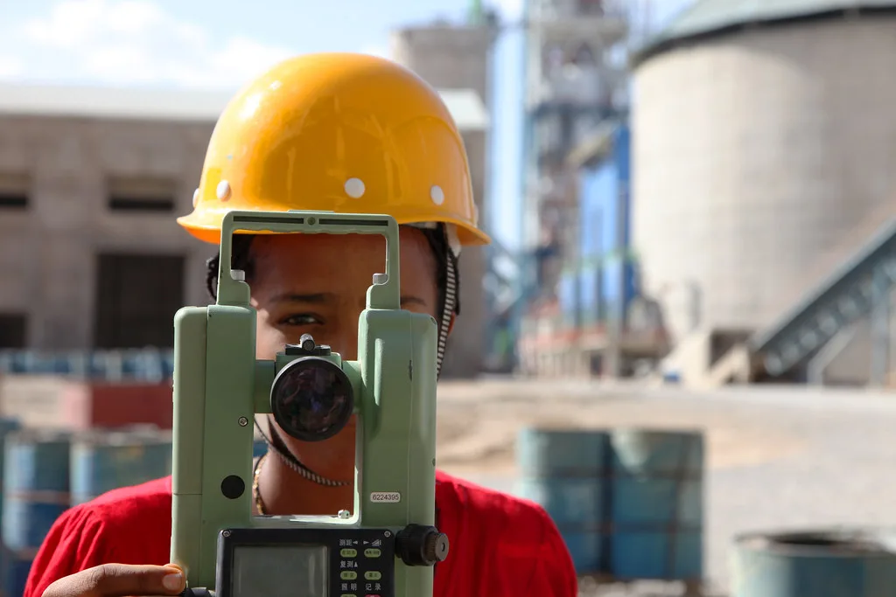
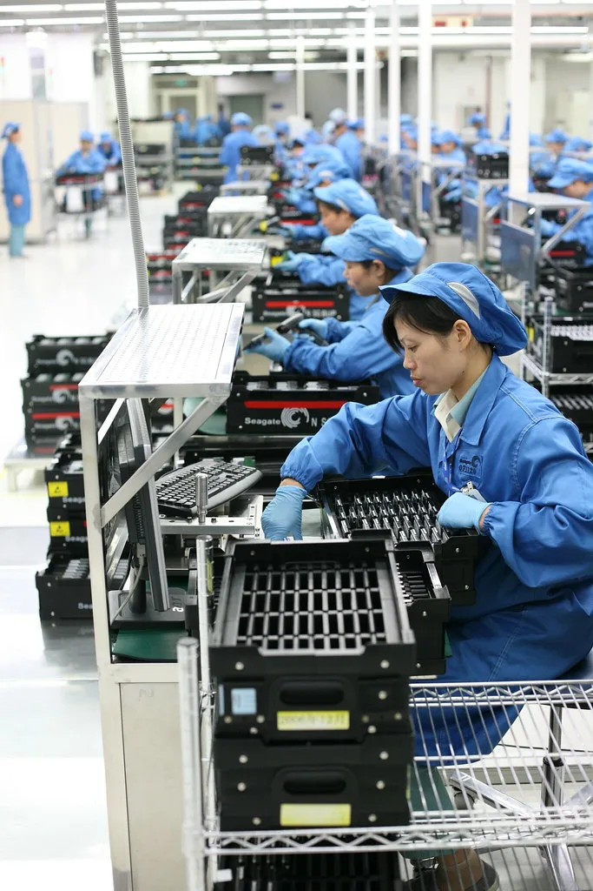

포스코 노사가 어렵게 도출한 올해 임금협상 잠정합의안이 조합원 투표에서 부결됐다. 조합원 찬반투표 결과 반대가 51.69%로 찬성 48.31%를 넘어서면서, 노사는 다시 협상 테이블에 앉아야 하는 상황에 놓였다. 지난해까지 비교적 순조롭게 마무리되던 포스코 임금교섭이 올해는 한 차례 합의 이후에도 투표에서 뒤집히는 보기 드문 사례를 남기게 됐다.
포스코 노사의 임금교섭은 지난 6월 16일 시작돼 실무교섭과 본교섭을 합쳐 약 30차례에 걸쳐 진행됐다. 그러나 임금 인상률과 보상 규모를 둘러싼 노사 간 간극은 쉽게 좁혀지지 않았고, 교섭이 교착 상태에 빠지자 노조는 지난 9월 두 차례 부분파업을 벌이기도 했다. 갈등이 이어지면서 노조는 지난 11월 2일 오후 7시부터 기한을 정하지 않고 단계적으로 확대하는 무기한 파업까지 예고한 상태였다. 다섯 달 가까이 끌어온 교섭이 좀처럼 결론에 이르지 못하면서, 현장에서는 장기 파업에 대한 피로감과 함께 회사 측에 대한 불만도 함께 쌓여갔다.

무기한 파업을 불과 사흘 앞둔 10월 30일, 포스코 노사는 경북 포항 본사에서 막판 본교섭을 벌인 끝에 잠정합의안을 마련하는 데 성공했다. 합의안에는 기본급 2.6% 인상과 일시금 600만원 지급, 특별승호 3호봉 부여가 담겼다. 또 명절 상여금으로 200만원과 기본급의 20%를 지급하고 이 비율을 2028년 이후 30%까지 높이는 내용, 교대휴일수당 추가와 상주·정비수당 2만원 인상, 배우자와 자녀까지 포괄하는 의료제도 개선안도 포함됐다.
노사가 극적으로 잠정합의안에 서명하면서 3차 파업은 일단 피할 수 있었다. 그러나 합의안을 바탕으로 진행된 조합원 찬반투표에서 과반이 반대표를 던지며 합의안이 최종 부결됐다. 현장 조합원들 사이에서는 기본급 인상률이나 보상 규모가 그동안의 교섭 과정과 파업에 들인 노력에 비해 충분하지 않다는 불만이 작용한 것으로 풀이된다. 투표 결과가 근소한 차이로 갈렸다는 점에서, 조합원 내부에서도 합의안에 대한 평가가 크게 엇갈렸음을 보여준다는 해석도 나온다.

합의안이 부결됨에 따라 포스코 노사는 다시 협상 테이블에 마주 앉아야 하는 상황이 됐다. 노조 지도부는 조합원들의 뜻을 반영해 재협상에 나설 계획을 밝혔고, 회사 측도 추가 협상에 응할 방침인 것으로 전해졌다. 다만 한 차례 합의를 이뤄낸 뒤에도 투표에서 뒤집힌 전례인 만큼, 재협상 과정에서 노사 모두 더 신중한 접근이 필요할 것으로 보인다.
업계에서는 이번 부결로 노사 갈등이 다시 격화될 가능성을 우려하고 있다. 합의안이 깨지면서 노조가 보류했던 파업 카드를 다시 꺼낼 수 있다는 관측도 나온다. 철강업계 전반이 글로벌 수요 둔화와 경쟁 심화로 어려움을 겪고 있는 가운데, 포스코의 노사 관계가 어떤 방향으로 전개될지에 관련 업계의 시선이 쏠리고 있다.
포스코 노사가 재협상을 통해 또 다른 잠정합의안을 내놓더라도, 한 차례 부결을 경험한 조합원들의 눈높이를 맞추기까지는 상당한 진통이 예상된다. 회사 측으로서는 생산 차질로 이어질 수 있는 파업을 피하면서도 노조가 받아들일 수 있는 수준의 처우 개선안을 마련해야 하는 과제를 안게 됐다. 노사 양측이 얼마나 빠르게 다시 접점을 찾아낼지가 향후 포스코의 생산 안정성과 철강업계 전반의 노사관계 흐름에도 영향을 미칠 것으로 보인다.